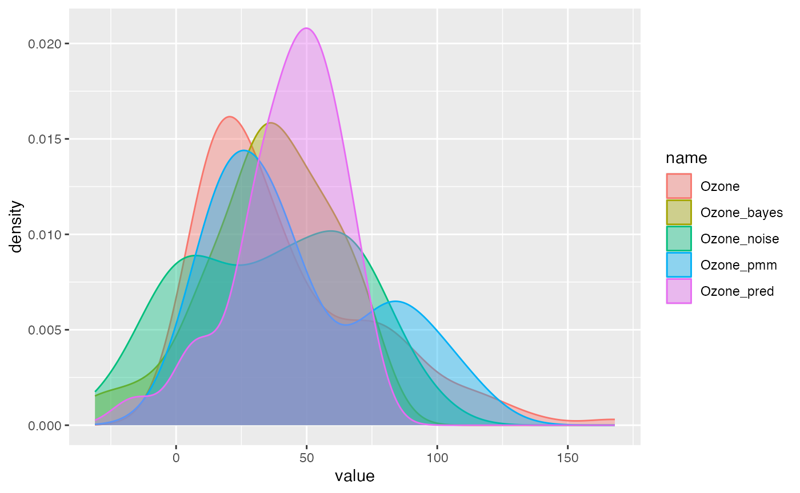
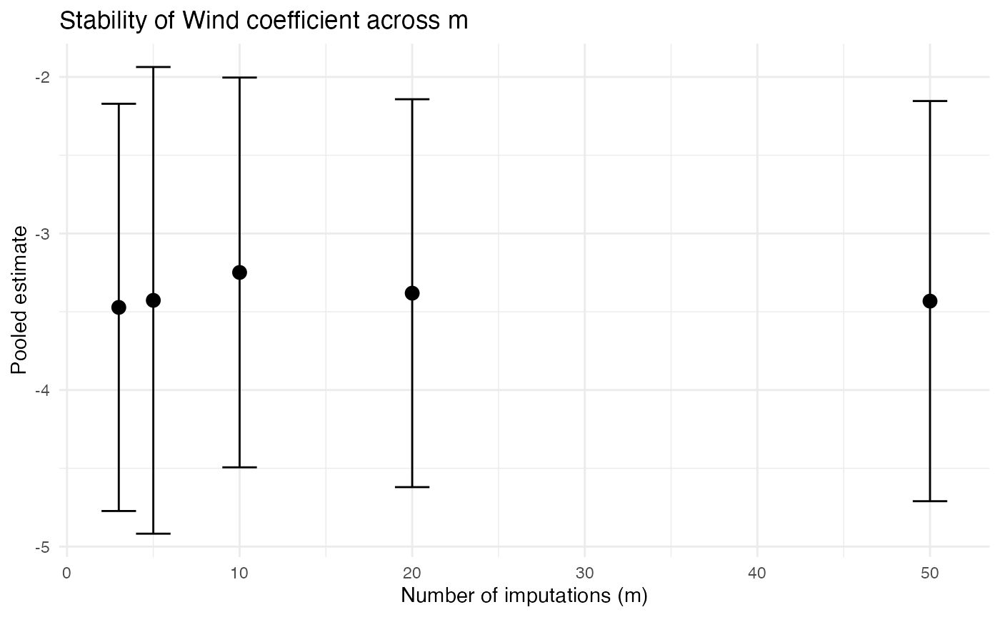

vignettes/missing-data-and-imputation.Rmd
missing-data-and-imputation.RmdHandling missing data is one of the most common challenges in applied statistics. The validity of any imputation strategy depends critically on why the data are missing. This vignette introduces the three missing-data mechanisms (MCAR, MAR, and MNAR) and then demonstrates how to use miceFast for proper Multiple Imputation (MI) with Rubin’s rules.
For the full API reference (all imputation models,
fill_NA(), fill_NA_N(), and the OOP
interface), see the companion vignette: miceFast Introduction and Advanced
Usage.
If you just want the recipe, here it is. The rest of this vignette explains why each step matters.
data(air_miss)
# 1. Impute m = 10 completed datasets
completed <- lapply(1:10, function(i) {
air_miss %>%
mutate(Ozone_imp = fill_NA(x = ., model = "lm_bayes",
posit_y = "Ozone", posit_x = c("Solar.R", "Wind", "Temp")))
})
# 2. Fit the analysis model on each
fits <- lapply(completed, function(d) lm(Ozone_imp ~ Wind + Temp, data = d))
# 3. Pool using Rubin's rules
summary(pool(fits))## Pooled results from 10 imputed datasets
## Rubin's rules with Barnard-Rubin df adjustment
## Complete-data df: 148
##
## Coefficients:
## term estimate std.error statistic df p.value conf.low conf.high
## (Intercept) -62.067 22.0364 -2.817 119.25 5.683e-03 -105.700 -18.433
## Wind -3.118 0.6334 -4.922 98.43 3.448e-06 -4.374 -1.861
## Temp 1.738 0.2364 7.354 117.25 2.829e-11 1.270 2.207
##
## Pooling diagnostics:
## term ubar b t riv lambda fmi
## (Intercept) 442.57484 39.117567 485.60416 0.09722 0.08861 0.1035
## Wind 0.34485 0.051237 0.40121 0.16344 0.14048 0.1574
## Temp 0.05065 0.004756 0.05588 0.10329 0.09362 0.1087Little and Rubin (2002) defined three mechanisms that describe the relationship between the data and the probability of missingness:
A variable is MCAR when the probability of being missing is the same for all observations, regardless of both observed and unobserved values.
where is the missingness indicator, are the observed values, and are the missing values.
Example: A sensor fails at random intervals due to a hardware glitch unrelated to the measurements.
Testing for MCAR: MCAR is the only mechanism that can be tested from the observed data. Little’s (1988) test compares the means of observed values across different missingness patterns; a significant result rejects MCAR. However, failure to reject does not prove MCAR. The test has limited power, especially with small samples or few patterns. It is a necessary check, not a sufficient one.
Implications:
A variable is MAR when the probability of being missing depends on observed data but not on the missing values themselves, conditional on the observed data.
Example: Patients with higher blood pressure (recorded) are less likely to return for a follow-up cholesterol measurement. Cholesterol is missing depending on blood pressure, not on the cholesterol value itself.
Implications:
lm_bayes,
lm_noise, pmm, lda) condition on
observed predictors, making them appropriate for MAR.MAR cannot be tested.
Unlike MCAR, there is no test that can distinguish MAR from MNAR using the observed data alone, because the distinction depends on the unobserved values. The practical response is to make MAR more plausible by including auxiliary variables. These are variables that predict missingness or the missing values even if they are not part of the analysis model. The more information in the imputation model, the weaker the assumption required.
Note also that the boundary between MAR and MNAR shifts depending on which variables are conditioned on. A variable that appears MNAR with a sparse predictor set may be MAR once the right covariates are included (see Collins et al., 2001).
A variable is MNAR when the probability of being missing depends on the unobserved (missing) value itself, even after conditioning on observed data.
Example: People with very high income are less likely to report their income in a survey. The missingness depends on the value that would have been reported.
Implications:
| Mechanism | Testable? | Imputation valid? | Strategy |
|---|---|---|---|
| MCAR | Yes (Little’s test) | Yes | Any method works; MI is most efficient |
| MAR | No | Yes (if model is correct) | Condition on observed predictors; use MI |
| MNAR | No | Partially | Use MI as a starting point + sensitivity analysis |
In practice, you cannot distinguish MAR from MNAR using the observed data alone. Including many predictors of missingness in the imputation model makes the MAR assumption more plausible and reduces the sensitivity to violation. Always perform sensitivity analyses.
Multiple Imputation (MI), introduced by Rubin (1987), addresses the fundamental problem of single imputation: it fails to account for the uncertainty introduced by not knowing the true missing values. For a comprehensive modern treatment of MI, see van Buuren (2018).
lm, glm) separately on each of the
completed datasets.Once the
completed datasets have been analyzed, the
sets of parameter estimates must be combined into a single set of
inferences. Rubin (1987) provided a simple set of formulas for this
pooling step, now universally known as Rubin’s rules.
The key insight is that the total uncertainty about a parameter has two
components: the usual sampling variance (which would exist even without
missing data) and an extra component that reflects not knowing the true
missing values. The formulas below are implemented in
miceFast::pool() (see ?pool for details).
Let and denote the point estimate and variance estimate from the -th completed dataset ().
Pooled estimate (Rubin, 1987, eq. 3.1.2):
The pooled point estimate is simply the average across imputations.
Within-imputation variance (Rubin, 1987, eq. 3.1.3):
This is the average of the variance estimates. It captures the sampling variability that would be present even if there were no missing data.
Between-imputation variance (Rubin, 1987, eq. 3.1.4):
This is the variance of the point estimates across imputations. It captures the extra uncertainty caused by not observing the missing values: if the imputations agree closely, is small and missingness has little impact.
Total variance (Rubin, 1987, eq. 3.1.5):
The factor corrects for using a finite number of imputations rather than infinitely many. Inference (confidence intervals, -tests) uses .
With complete data, a -test would use the residual degrees of freedom. With MI, the reference distribution is a with degrees of freedom that accounts for both the finite and the fraction of information lost to missingness. Rubin’s (1987) large-sample approximation is:
where is the relative increase in variance (RIV) due to missingness (Rubin, 1987, eq. 3.1.7). When is small (little missing information), is large and inference resembles the complete-data case.
For small samples, Barnard and Rubin (1999) proposed an adjustment that also incorporates the complete-data degrees of freedom :
where
and
is the proportion of total variance due to missingness
(denoted
in the output of pool()). This adjusted
is always
,
producing more conservative inference when the sample is small.
pool() applies this adjustment automatically when
df.residual() is available from the fitted models.
Each imputed dataset is a draw from the posterior predictive distribution . The between-imputation variance captures the additional uncertainty from not knowing the missing values. Rubin (1987) showed that this procedure yields valid frequentist inference (confidence intervals with correct coverage) provided two conditions hold: the imputations are proper and the imputation model is congenial with the analysis model. The efficiency of MI depends on the fraction of missing information (FMI), not on the fraction of missing data. A dataset with 40% missing values may have low FMI if the observed predictors are highly informative.
An imputation procedure is proper (Rubin, 1987) if it propagates all sources of uncertainty: both the uncertainty about the model parameters and the residual variability. In practice this means each imputation must
lm_bayes in miceFast is a proper imputation method: it
draws
and
from the posterior under a non-informative prior, then generates imputed
values from the resulting predictive distribution. pmm
(predictive mean matching) is also proper: it draws
from the same Bayesian posterior, computes predicted values for all
rows, and then matches each missing-row prediction to the nearest
observed-row predictions, returning the corresponding observed
values. Because imputed values are always real observed values, PMM
automatically preserves the data distribution and respects natural
bounds (e.g., non-negativity) without extra constraints.
lm_noise, which adds residual noise to point-estimate
predictions, is improper. It omits the parameter
uncertainty and tends to produce confidence intervals that are slightly
too narrow, though the bias is small when
is large relative to
(Schafer, 1997, Section 3.4). lda with a random
ridge is approximate: different ridge
values across imputations introduce variation, but this is not a formal
posterior draw.
The imputation model is congenial with the analysis model (Meng, 1994) when the imputation model is at least as general as (or richer than) the analysis model. If the analysis model includes an interaction term but the imputation model does not, the resulting MI inferences can be biased. Practically: include in the imputation model all variables that will appear in the analysis model, plus any auxiliary variables that predict missingness. Err on the side of a richer imputation model.
The mice package provides a complete MI framework but its imputation step can be slow, especially with large datasets, many groups, or many imputations. miceFast provides fast C++/Armadillo implementations of the same underlying models, which can be plugged into the standard MI workflow:
| Step | mice | miceFast |
|---|---|---|
| 1. Impute | mice() |
fill_NA() in a loop |
| 2. Analyze | with() |
lapply() + model fitting |
| 3. Pool | mice::pool() |
miceFast::pool() |
The pool() function in miceFast
implements Rubin’s rules with the Barnard-Rubin degrees-of-freedom
adjustment. It has been tested against mice::pool() for
linear, logistic, and Poisson regression.
For MI to work correctly, each imputation must introduce appropriate
random variation. Deterministic models (like
lm_pred) should not be used for MI because they
produce identical imputations across datasets.
| Variable type | Recommended model | How it’s stochastic | Proper? |
|---|---|---|---|
| Continuous | lm_bayes |
Draws regression coefficients from their posterior distribution | Yes |
| Continuous / Categorical | pmm |
Draws coefficients from the posterior, matches predictions to nearest observed values (Type II PMM) | Yes |
| Categorical |
lda + random ridge
|
Different ridge penalties across imputations create variation | Approximate |
PMM for MI: pmm is proper and works for
both continuous and categorical variables. It preserves the observed
data distribution. Imputed values are always values that were actually
observed. Since fill_NA() does not support
pmm, use the OOP interface
(impute("pmm", ...)) in a loop for MI (see example below
and the Introduction vignette).
The three-step MI workflow uses fill_NA() in a loop, any
model with coef()/vcov(), and
pool(). For more imputation examples (grouping, weights,
data.table, OOP), see the Introduction
vignette.
data(air_miss)
# Step 1: Create m = 10 completed datasets
m <- 10
completed <- lapply(1:m, function(i) {
air_miss %>%
mutate(
Ozone_imp = fill_NA(
x = ., model = "lm_bayes",
posit_y = "Ozone",
posit_x = c("Solar.R", "Wind", "Temp")
)
)
})
# Step 2: Fit the analysis model on each
fits <- lapply(completed, function(d) {
lm(Ozone_imp ~ Wind + Temp, data = d)
})
# Step 3: Pool using Rubin's rules
pool_result <- pool(fits)
pool_result## Pooled results from 10 imputed datasets
## Rubin's rules with Barnard-Rubin df adjustment
##
## term estimate std.error statistic df p.value
## (Intercept) -58.153 24.8186 -2.343 55.99 2.270e-02
## Wind -3.510 0.6549 -5.359 80.60 7.764e-07
## Temp 1.728 0.2662 6.494 55.16 2.511e-08
# Detailed summary with confidence intervals
summary(pool_result)## Pooled results from 10 imputed datasets
## Rubin's rules with Barnard-Rubin df adjustment
## Complete-data df: 148
##
## Coefficients:
## term estimate std.error statistic df p.value conf.low conf.high
## (Intercept) -58.153 24.8186 -2.343 55.99 2.270e-02 -107.871 -8.436
## Wind -3.510 0.6549 -5.359 80.60 7.764e-07 -4.813 -2.206
## Temp 1.728 0.2662 6.494 55.16 2.511e-08 1.195 2.262
##
## Pooling diagnostics:
## term ubar b t riv lambda fmi
## (Intercept) 446.47720 154.07744 615.96239 0.3796 0.2752 0.2997
## Wind 0.34789 0.07365 0.42890 0.2329 0.1889 0.2083
## Temp 0.05109 0.01795 0.07084 0.3865 0.2788 0.3036The output includes:
Real datasets often have both continuous and categorical variables
with missing values. Use lm_bayes (or pmm) for
continuous variables and lda with a random
ridge (or pmm) for categorical variables:
data(air_miss)
impute_dataset <- function(data) {
data %>%
mutate(
# Continuous: Bayesian linear regression
Ozone_imp = fill_NA(
x = ., model = "lm_bayes",
posit_y = "Ozone",
posit_x = c("Solar.R", "Wind", "Temp")
),
Solar_R_imp = fill_NA(
x = ., model = "lm_bayes",
posit_y = "Solar.R",
posit_x = c("Wind", "Temp", "Intercept")
),
# Categorical: LDA with random ridge for stochasticity
Ozone_chac_imp = fill_NA(
x = ., model = "lda",
posit_y = "Ozone_chac",
posit_x = c("Wind", "Temp"),
ridge = runif(1, 0.5, 50)
)
)
}
set.seed(777)
completed <- replicate(10, impute_dataset(air_miss), simplify = FALSE)
# Fit and pool a model for continuous outcome
fits_ozone <- lapply(completed, function(d) {
lm(Ozone_imp ~ Wind + Temp + Solar_R_imp, data = d)
})
pool(fits_ozone)## Pooled results from 10 imputed datasets
## Rubin's rules with Barnard-Rubin df adjustment
##
## term estimate std.error statistic df p.value
## (Intercept) -50.60537 21.48980 -2.355 108.8 2.032e-02
## Wind -3.46318 0.58692 -5.901 124.3 3.211e-08
## Temp 1.49824 0.24352 6.153 94.7 1.816e-08
## Solar_R_imp 0.05272 0.02193 2.404 92.6 1.822e-02pool() works with any model that supports
coef() and vcov(). Here’s an example with
logistic regression:
data(air_miss)
# Create a binary outcome for demonstration
completed <- lapply(1:10, function(i) {
d <- air_miss %>%
mutate(
Ozone_imp = fill_NA(
x = ., model = "lm_bayes",
posit_y = "Ozone",
posit_x = c("Solar.R", "Wind", "Temp")
)
)
d$high_ozone <- as.integer(d$Ozone_imp > median(d$Ozone_imp, na.rm = TRUE))
d
})
fits_logit <- lapply(completed, function(d) {
glm(high_ozone ~ Wind + Temp, data = d, family = binomial)
})
pool(fits_logit)## Pooled results from 10 imputed datasets
## Rubin's rules with Barnard-Rubin df adjustment
##
## term estimate std.error statistic df p.value
## (Intercept) -16.7246 4.82959 -3.463 31.13 0.001577
## Wind -0.2305 0.08935 -2.580 71.44 0.011951
## Temp 0.2409 0.06092 3.955 29.03 0.000451When the relationship between variables differs across groups, fit separate imputation models per group:
data(air_miss)
completed_grouped <- lapply(1:5, function(i) {
air_miss %>%
group_by(groups) %>%
do(mutate(.,
Ozone_imp = fill_NA(
x = ., model = "lm_bayes",
posit_y = "Ozone",
posit_x = c("Wind", "Temp", "Intercept")
)
)) %>%
ungroup()
})
fits <- lapply(completed_grouped, function(d) {
lm(Ozone_imp ~ Wind + Temp + factor(groups), data = d)
})
pool(fits)## Pooled results from 5 imputed datasets
## Rubin's rules with Barnard-Rubin df adjustment
##
## term estimate std.error statistic df p.value
## (Intercept) -97.809 23.4980 -4.1624 136.16 5.552e-05
## Wind -1.885 0.6485 -2.9067 51.35 5.380e-03
## Temp 2.164 0.3076 7.0371 112.90 1.615e-10
## factor(groups)6 -26.628 7.7409 -3.4399 46.61 1.237e-03
## factor(groups)7 -10.223 8.2259 -1.2428 70.35 2.181e-01
## factor(groups)8 -7.128 8.7645 -0.8133 39.26 4.209e-01
## factor(groups)9 -18.415 7.1444 -2.5776 61.84 1.235e-02If your data have sampling weights or you want to account for heteroscedasticity:
data(air_miss)
completed_w <- lapply(1:5, function(i) {
air_miss %>%
mutate(
Solar_R_imp = fill_NA(
x = ., model = "lm_bayes",
posit_y = "Solar.R",
posit_x = c("Wind", "Temp", "Intercept"),
w = weights
)
)
})
fits_w <- lapply(completed_w, function(d) {
lm(Solar_R_imp ~ Wind + Temp, data = d)
})
pool(fits_w)## Pooled results from 5 imputed datasets
## Rubin's rules with Barnard-Rubin df adjustment
##
## term estimate std.error statistic df p.value
## (Intercept) -92.581 79.2008 -1.169 141.1 0.2443977
## Wind 2.537 2.3296 1.089 116.8 0.2783382
## Temp 3.226 0.8395 3.843 146.1 0.0001809PMM is a proper method that works for both
continuous and categorical variables. It draws coefficients from the
posterior, predicts on all rows, and matches each missing-row prediction
to the nearest observed values. Imputed values are always values that
were actually observed. Since fill_NA() does not support
pmm, use the OOP interface for the MI loop:
data(air_miss)
dat <- as.matrix(air_miss[, c("Ozone", "Solar.R", "Wind", "Temp")])
dat <- cbind(dat, Intercept = 1)
m <- 10
completed <- lapply(1:m, function(i) {
model <- new(miceFast)
model$set_data(dat + 0) # copy. set_data uses the matrix by reference.
# impute("pmm", ...) draws from the Bayesian posterior and matches to nearest observed value
model$update_var(1, model$impute("pmm", 1, c(3, 4, 5))$imputations)
d <- as.data.frame(model$get_data())
colnames(d) <- c("Ozone", "Solar.R", "Wind", "Temp", "Intercept")
d
})
fits_pmm <- lapply(completed, function(d) {
lm(Ozone ~ Wind + Temp, data = d)
})
pool(fits_pmm)## Pooled results from 10 imputed datasets
## Rubin's rules with Barnard-Rubin df adjustment
##
## term estimate std.error statistic df p.value
## (Intercept) -65.328 28.3811 -2.302 34.97 2.742e-02
## Wind -2.920 0.8038 -3.633 37.19 8.404e-04
## Temp 1.765 0.2935 6.014 40.84 4.191e-07Since we can never be certain whether data are MAR or MNAR, it is important to check whether substantive conclusions are robust to different imputation approaches.
fill_NA_N()
fill_NA_N() produces a single filled-in dataset: for
lm_bayes/lm_noise it averages k
draws; for pmm it samples from the k nearest
observed values. This makes it useful for quick sensitivity checks.
Compare different imputation strategies:
data(air_miss)
air_sensitivity <- air_miss %>%
mutate(
Ozone_bayes = fill_NA(x = ., model = "lm_bayes",
posit_y = "Ozone", posit_x = c("Solar.R", "Wind", "Temp")),
Ozone_noise = fill_NA(x = ., model = "lm_noise",
posit_y = "Ozone", posit_x = c("Solar.R", "Wind", "Temp")),
Ozone_pmm = fill_NA_N(x = ., model = "pmm",
posit_y = "Ozone", posit_x = c("Solar.R", "Wind", "Temp"), k = 20),
Ozone_pred = fill_NA(x = ., model = "lm_pred",
posit_y = "Ozone", posit_x = c("Solar.R", "Wind", "Temp"))
)
compare_imp(air_sensitivity, origin = "Ozone",
target = c("Ozone_bayes", "Ozone_noise", "Ozone_pmm", "Ozone_pred"))
Check whether results stabilize as m increases:
set.seed(2025)
results <- data.frame()
for (m_val in c(3, 5, 10, 20, 50)) {
completed <- lapply(1:m_val, function(i) {
air_miss %>%
mutate(Ozone_imp = fill_NA(
x = ., model = "lm_bayes",
posit_y = "Ozone", posit_x = c("Solar.R", "Wind", "Temp")
))
})
fits <- lapply(completed, function(d) lm(Ozone_imp ~ Wind + Temp, data = d))
s <- summary(pool(fits))
s$m <- m_val
results <- rbind(results, s)
}## Pooled results from 3 imputed datasets
## Rubin's rules with Barnard-Rubin df adjustment
## Complete-data df: 148
##
## Coefficients:
## term estimate std.error statistic df p.value conf.low conf.high
## (Intercept) -63.965 22.6779 -2.821 38.59 7.531e-03 -109.851 -18.079
## Wind -2.998 0.6121 -4.898 61.02 7.451e-06 -4.222 -1.774
## Temp 1.750 0.2387 7.329 47.51 2.441e-09 1.270 2.230
##
## Pooling diagnostics:
## term ubar b t riv lambda fmi
## (Intercept) 418.10247 72.138255 514.2868 0.2300 0.1870 0.2261
## Wind 0.32578 0.036664 0.3747 0.1501 0.1305 0.1576
## Temp 0.04785 0.006863 0.0570 0.1913 0.1606 0.1938
## Pooled results from 5 imputed datasets
## Rubin's rules with Barnard-Rubin df adjustment
## Complete-data df: 148
##
## Coefficients:
## term estimate std.error statistic df p.value conf.low conf.high
## (Intercept) -59.850 22.2855 -2.686 102.45 8.447e-03 -104.051 -15.649
## Wind -3.212 0.6625 -4.848 53.54 1.111e-05 -4.540 -1.883
## Temp 1.719 0.2422 7.097 86.93 3.260e-10 1.237 2.200
##
## Pooling diagnostics:
## term ubar b t riv lambda fmi
## (Intercept) 450.0165 38.85688 496.64477 0.1036 0.09389 0.1111
## Wind 0.3506 0.07354 0.43890 0.2517 0.20108 0.2293
## Temp 0.0515 0.00595 0.05864 0.1387 0.12177 0.1413
## Pooled results from 10 imputed datasets
## Rubin's rules with Barnard-Rubin df adjustment
## Complete-data df: 148
##
## Coefficients:
## term estimate std.error statistic df p.value conf.low conf.high
## (Intercept) -62.071 23.6013 -2.630 79.65 1.025e-02 -109.042 -15.099
## Wind -3.376 0.6666 -5.064 73.54 2.942e-06 -4.704 -2.047
## Temp 1.764 0.2514 7.019 82.07 5.876e-10 1.264 2.264
##
## Pooling diagnostics:
## term ubar b t riv lambda fmi
## (Intercept) 450.23536 97.07922 557.02250 0.2372 0.1917 0.2113
## Wind 0.35082 0.08504 0.44436 0.2666 0.2105 0.2311
## Temp 0.05152 0.01060 0.06319 0.2264 0.1846 0.2038
## Pooled results from 20 imputed datasets
## Rubin's rules with Barnard-Rubin df adjustment
## Complete-data df: 148
##
## Coefficients:
## term estimate std.error statistic df p.value conf.low conf.high
## (Intercept) -53.857 23.4118 -2.300 92.45 2.367e-02 -100.352 -7.362
## Wind -3.325 0.6530 -5.092 92.82 1.852e-06 -4.621 -2.028
## Temp 1.654 0.2505 6.601 92.29 2.547e-09 1.156 2.151
##
## Pooling diagnostics:
## term ubar b t riv lambda fmi
## (Intercept) 435.88724 106.88184 548.11317 0.2575 0.2047 0.2214
## Wind 0.33964 0.08260 0.42637 0.2554 0.2034 0.2200
## Temp 0.04988 0.01227 0.06277 0.2584 0.2053 0.2220
## Pooled results from 50 imputed datasets
## Rubin's rules with Barnard-Rubin df adjustment
## Complete-data df: 148
##
## Coefficients:
## term estimate std.error statistic df p.value conf.low conf.high
## (Intercept) -55.191 24.4279 -2.259 90.38 2.627e-02 -103.719 -6.664
## Wind -3.446 0.6872 -5.015 88.16 2.724e-06 -4.812 -2.081
## Temp 1.686 0.2568 6.563 95.54 2.723e-09 1.176 2.195
##
## Pooling diagnostics:
## term ubar b t riv lambda fmi
## (Intercept) 430.77041 162.69812 596.72249 0.3852 0.2781 0.2936
## Wind 0.33565 0.13397 0.47230 0.4071 0.2893 0.3049
## Temp 0.04929 0.01635 0.06597 0.3382 0.2528 0.2679
results %>%
filter(term == "Wind") %>%
ggplot(aes(x = m, y = estimate)) +
geom_point(size = 3) +
geom_errorbar(aes(ymin = conf.low, ymax = conf.high), width = 2) +
labs(title = "Stability of Wind coefficient across m",
x = "Number of imputations (m)",
y = "Pooled estimate") +
theme_minimal()
Always compare MI results against simple baselines. If conclusions differ, investigate why. It may reveal problems with your imputation model or indicate that the missing-data mechanism matters.
data(air_miss)
set.seed(2025)
# 1. Complete cases (listwise deletion). Unbiased under MCAR.
fit_cc <- lm(Ozone ~ Wind + Temp, data = air_miss[complete.cases(air_miss[, c("Ozone", "Wind", "Temp")]), ])
ci_cc <- confint(fit_cc)
# 2. Mean imputation. Biased; underestimates variance.
air_mean <- air_miss
air_mean$Ozone[is.na(air_mean$Ozone)] <- mean(air_mean$Ozone, na.rm = TRUE)
fit_mean <- lm(Ozone ~ Wind + Temp, data = air_mean)
ci_mean <- confint(fit_mean)
# 3. Deterministic regression imputation (lm_pred). No residual noise.
air_pred <- air_miss %>%
mutate(Ozone_imp = fill_NA(
x = ., model = "lm_pred",
posit_y = "Ozone", posit_x = c("Solar.R", "Wind", "Temp")
))
fit_pred <- lm(Ozone_imp ~ Wind + Temp, data = air_pred)
ci_pred <- confint(fit_pred)
# 4. Proper MI with Rubin's rules (lm_bayes, m = 20)
completed <- lapply(1:20, function(i) {
air_miss %>%
mutate(Ozone_imp = fill_NA(
x = ., model = "lm_bayes",
posit_y = "Ozone", posit_x = c("Solar.R", "Wind", "Temp")
))
})
fits <- lapply(completed, function(d) lm(Ozone_imp ~ Wind + Temp, data = d))
pool_s <- summary(pool(fits))## Pooled results from 20 imputed datasets
## Rubin's rules with Barnard-Rubin df adjustment
## Complete-data df: 148
##
## Coefficients:
## term estimate std.error statistic df p.value conf.low conf.high
## (Intercept) -60.110 23.3420 -2.575 98.26 1.151e-02 -106.430 -13.790
## Wind -3.314 0.6715 -4.934 85.14 3.945e-06 -4.649 -1.978
## Temp 1.733 0.2494 6.951 98.85 3.937e-10 1.239 2.228
##
## Pooling diagnostics:
## term ubar b t riv lambda fmi
## (Intercept) 444.52602 95.54381 544.84702 0.2257 0.1841 0.2002
## Wind 0.34637 0.09960 0.45095 0.3019 0.2319 0.2493
## Temp 0.05087 0.01078 0.06219 0.2226 0.1821 0.1981
# Compare Wind coefficient across all methods
comparison <- data.frame(
method = c("Complete cases", "Mean imputation", "Regression (lm_pred)", "MI (lm_bayes, m=20)"),
estimate = c(coef(fit_cc)["Wind"], coef(fit_mean)["Wind"],
coef(fit_pred)["Wind"], pool_s$estimate[pool_s$term == "Wind"]),
ci_low = c(ci_cc["Wind", 1], ci_mean["Wind", 1],
ci_pred["Wind", 1], pool_s$conf.low[pool_s$term == "Wind"]),
ci_high = c(ci_cc["Wind", 2], ci_mean["Wind", 2],
ci_pred["Wind", 2], pool_s$conf.high[pool_s$term == "Wind"]),
n_used = c(nrow(air_miss[complete.cases(air_miss[, c("Ozone", "Wind", "Temp")]), ]),
nrow(air_miss), nrow(air_miss), nrow(air_miss))
)
comparison$ci_width <- comparison$ci_high - comparison$ci_low
comparison## method estimate ci_low ci_high n_used ci_width
## 1 Complete cases -3.055491 -4.369510 -1.741472 116 2.628037
## 2 Mean imputation -2.598643 -3.693829 -1.503456 153 2.190372
## 3 Regression (lm_pred) -3.372772 -4.376476 -2.369067 153 2.007409
## 4 MI (lm_bayes, m=20) -3.313565 -4.648706 -1.978423 153 2.670283Notice that mean imputation and deterministic regression produce artificially narrow confidence intervals (they ignore imputation uncertainty), while complete-case analysis uses fewer observations. MI properly reflects both sources of uncertainty.
Rubin (1987) showed that with imputations the efficiency relative to is approximately , where is the FMI. The original recommendation of assumed FMI below 50% and was aimed at point estimates. For hypothesis tests and confidence intervals, more imputations are needed: White et al. (2011) suggested , and von Hippel (2020) proposed a two-stage rule: run a pilot with small , estimate FMI, then set so that the Monte Carlo error of the MI estimate is small relative to its standard error.
Since miceFast imputation is fast, there is little reason to be stingy. Use or more, and increase until estimates and standard errors stabilize (see the sensitivity analysis above).
Examine missingness patterns: Use
upset_NA() to visualize which variables are jointly
missing.
upset_NA(air_miss, 6)Check collinearity: Run VIF() on
your predictor set. Drop or combine predictors with VIF > 10.
Choose imputation models: lm_bayes
or pmm for continuous, lda with random
ridge or pmm for categorical,
logreg = TRUE for right-skewed variables.
Include auxiliary variables: Add predictors of missingness to the imputation model even if they are not in the analysis model. This makes MAR more plausible.
Set m ≥ 20. Since miceFast is fast, there is little cost. Increase until estimates and standard errors stabilize (see sensitivity analysis above).
Pool and report: Use pool() for
Rubin’s rules. Report the imputation model, m, pooled
estimates, and confidence intervals.
Run sensitivity analyses: Vary the model
(lm_bayes vs lm_noise vs pmm),
vary m, and compare results. Check base methods too.
Von Hippel (2020) proposed a two-stage procedure: run a pilot with
small m, estimate FMI from the pooled output, then use the FMI
to calculate how many imputations are needed for stable SE estimates.
The R package howManyImputations (available on CRAN)
implements this calculation directly from a mice mids
object. For a miceFast workflow you can use the FMI from
pool() as input:
# Pilot with m = 5
set.seed(2025)
pilot <- lapply(1:5, function(i) {
air_miss %>%
mutate(Ozone_imp = fill_NA(x = ., model = "lm_bayes",
posit_y = "Ozone", posit_x = c("Solar.R", "Wind", "Temp")))
})
pilot_pool <- pool(lapply(pilot, function(d) lm(Ozone_imp ~ Wind + Temp, data = d)))
# Inspect FMI, the key input for deciding m
data.frame(term = pilot_pool$term, fmi = round(pilot_pool$fmi, 3))## term fmi
## 1 (Intercept) 0.159
## 2 Wind 0.099
## 3 Temp 0.161
# For the exact formula and its derivation see:
# von Hippel (2020) "How many imputations do you need?", Sociological Methods & Research
# R implementation: install.packages("howManyImputations")| Feature | mice | miceFast |
|---|---|---|
| MI framework | Complete (FCS/MICE algorithm) | Building blocks for MI |
| Imputation models | 25+ built-in methods |
lm_pred, lm_bayes, lm_noise,
lda, pmm
|
| Chained equations | Yes (iterative multivariate) | Single-pass sequential; not iterative FCS |
| Speed | R-based | C++/Armadillo, significantly faster |
| Grouping | Via blocks
|
Built-in, auto-sorted |
| Weights | Limited | Full support |
| Pooling | mice::pool() |
miceFast::pool() |
| Diagnostics | Trace plots, convergence |
compare_imp(), upset_NA()
|
mice (van Buuren & Groothuis-Oudshoorn, 2011) is
the right choice when you need the full chained-equations algorithm,
passive imputation, or its diagnostic tooling. miceFast
is useful when speed matters (large data, many groups, many imputations)
or when you want imputation inside
dplyr/data.table pipelines. The two can be
combined: use miceFast for imputation and
mice for diagnostics, or vice versa.
Important caveat: The convenience functions
(fill_NA, fill_NA_N) fill variables in a
single pass. For datasets where the missing-data pattern is monotone or
nearly so, a single pass is sufficient. With complex interlocking
patterns, however, you can mimic iterative FCS (chained
equations) using the OOP interface: call update_var() for
each variable in a loop and cycle through multiple iterations, exactly
like mice’s algorithm:
# Save which cells are originally NA
na1 <- is.na(mat[, 1]); na2 <- is.na(mat[, 2]); na3 <- is.na(mat[, 3])
# Initialise NAs (e.g. column means) so predictors are always complete
for (j in seq_len(ncol(mat))) {
na_j <- is.na(mat[, j])
if (any(na_j)) mat[na_j, j] <- mean(mat[!na_j, j])
}
model$set_data(mat)
for (iter in 1:5) {
col1 <- model$get_data()[, 1]; col1[na1] <- NaN; model$update_var(1, col1)
model$update_var(1, model$impute("lm_bayes", 1, c(2, 3, 4))$imputations)
col2 <- model$get_data()[, 2]; col2[na2] <- NaN; model$update_var(2, col2)
model$update_var(2, model$impute("lm_bayes", 2, c(1, 3, 4))$imputations)
col3 <- model$get_data()[, 3]; col3[na3] <- NaN; model$update_var(3, col3)
model$update_var(3, model$impute("lda", 3, c(1, 2, 4))$imputations)
}The key is the save-restore-impute cycle: record which cells are originally missing, initialise them so predictors are complete, then before each variable’s imputation restore its original NAs. Without this step, rows where both the dependent variable and a predictor are jointly missing would never be imputed.
update_var() permanently modifies the data matrix by
reference, so each variable’s imputation conditions on the most recently
imputed values for all other variables – the same sequential
conditioning that defines the MICE/FCS algorithm. Wrap this in
lapply(1:m, ...) and you have full iterative MI at C++
speed.
The same logic works with fill_NA in a data.table
pipeline, since := updates columns in place:
dt <- naive_fill_NA(copy(dt_orig)) # initialise
na_oz <- is.na(dt_orig$Ozone); na_sr <- is.na(dt_orig[["Solar.R"]])
for (iter in 1:5) {
set(dt, which(na_oz), "Ozone", NA_real_) # restore NAs
dt[, Ozone := fill_NA(.SD, "lm_bayes", "Ozone", c("Solar.R", "Wind", "Temp"))]
set(dt, which(na_sr), "Solar.R", NA_real_)
dt[, Solar.R := fill_NA(.SD, "lm_bayes", "Solar.R", c("Ozone", "Wind", "Temp"))]
}With dplyr the approach is the same, just re-mutate each
variable in sequence inside the iteration loop. The OOP interface is
fastest because it avoids R-level data copies, but the convenience
functions work equally well for correctness.
Rubin, D.B. (1987). Multiple Imputation for Nonresponse in Surveys. John Wiley & Sons.
Barnard, J. and Rubin, D.B. (1999). Small-sample degrees of freedom with multiple imputation. Biometrika, 86(4), 948-955.
Collins, L.M., Schafer, J.L., and Kam, C.-M. (2001). A comparison of inclusive and restrictive strategies in modern missing data procedures. Psychological Methods, 6(4), 330-351.
Little, R.J.A. (1988). A test of missing completely at random for multivariate data with missing values. Journal of the American Statistical Association, 83(404), 1198-1202.
Little, R.J.A. and Rubin, D.B. (2002). Statistical Analysis with Missing Data (2nd ed.). John Wiley & Sons.
Meng, X.-L. (1994). Multiple-imputation inferences with uncongenial sources of input. Statistical Science, 9(4), 538-558.
Schafer, J.L. (1997). Analysis of Incomplete Multivariate Data. Chapman & Hall/CRC.
van Buuren, S. (2018). Flexible Imputation of Missing Data (2nd ed.). Chapman & Hall/CRC. Online version.
van Buuren, S. and Groothuis-Oudshoorn, K. (2011). mice: Multivariate Imputation by Chained Equations in R. Journal of Statistical Software, 45(3), 1-67.
White, I.R., Royston, P., and Wood, A.M. (2011). Multiple imputation using chained equations: Issues and guidance for practice. Statistics in Medicine, 30(4), 377-399.
von Hippel, P.T. (2020). How many imputations do you need? A two-stage calculation using a quadratic rule. Sociological Methods & Research, 49(3), 699-718.